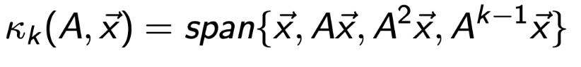
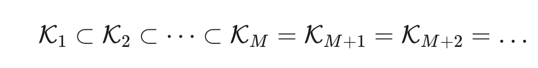
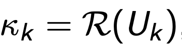
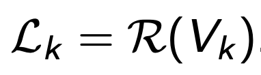
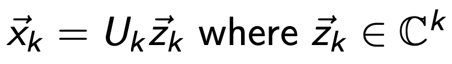
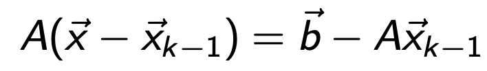
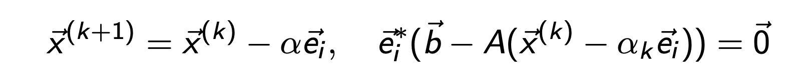

Ch8. Krylov subspace
Ax = b
풀고있다 우리는.
푸는방식
direct method -> classical iterative method ->
를 지나서,
Krylov subspace iterative method
에 도착하였다.
Motivation:
우리가 기존에 풀던 classical iterative method는
sparse large matrix를 풀기에는 연산시간이 너무 오래걸린다.

e.g) diffusion equation - large sparse matrix.
위 Matrix A는 diffusion Equation으로부터 유도된 large sparse Matrix.
Direct method로 풀게 되면, 시간이 너무 오래걸린다.
Solution: Krylov subspace.
크릴로프 부분 공간 (Krylov Subspaces)이라는 개념을 도입해서,
위 문제를 해결하자.
key idea of Krylov subspace.
아이디어: 모든 해의 공간을 뒤지지 않고,
가장 답이 있을 것 같은 공간
만 뒤진다.
(답이 있을 것 같은 공간 = krylov subspace)
Definition of Krylov subspace.
A : n x n Matrix
x : (n,1) vector

Definition of Krylov subspace.
그렇다면, 우리는 왜 해가 저 공간안에 있다고 할 수 있을까?
본질적으로 이 개념을 이해하기 위해서
Invariant subspace
를 이해해야한다.

위 정의를 살펴보면, S공간에 A를 곱했음에도 불구하고, S공간안에 있는 경우.
S Is invariant of A라고 부른다.
가장 대표적인 예시로, A의 eigen vector를 기저로 이루어진 공간 S라고 하자.
결국, 기저벡터들의 방향이 A를 곱해도 일정하다. 따라서 Invariant 함을 알 수 있다.

위 Invariant개념을 가지고 Krylov subspace로 돌아가면,

k가 커지면 커질수록, space 는 점점 확장된다.
여기서 A를 곱하면 곱할수록
dominant eigen vector방향으로 수렴
하는 것은
우리가 이전 시간에 확인하였다.

정말 중요한 개념, dominant eigen vector.
여기서 우리가, linear algebra시간에
A의 차수 m 을 나타내는 Cayley - Hamilton Theorem
을 떠올려보자.

Cayley-Hamilton Theorem
위 식이 의미하는 것은,
A^(m+1), A^(m+2) .... 모든 m보다 큰 차수의 A는 전부.
A^m, A^(m-1) ..... A^1, 1 의 선형결합으로 나타낼 수 있다는 것이었다.
따라서, 이를 Krylov subspace에 적용해보면,
A^(m+1)x -> A^m, A^(m-1) ... 1 로 표현이 가능하기 때문에,
krylov subspace가 더이상 확장되지 않는 시점
이 온다.


그리고 그 순간, 다시 Cayley- Mailton Theorem식 양변에 x를 곱해주자.
Cayley-Hamilton Theorem

쭉, 전개를 하면

이후에 Ax = b를 대입해준후, x로 묶고 넘겨주자.


즉, 결론적으로 Krylov subspalce k(A,b) 안에 해가 존재한다는 것을 알 수 있다.

자 지금까지 우리는
최종적인 해 x는
m 번째, krylov subspace안에 존재함을 증명였다.
여기서, 하지만 우리는 iterative method로
1부터 -> m까지 차근차근 반복법을 진행한다.
(m까지 도달하지 않고도,
어느정도 정확한해에 도달 할 수 있기 때문)
위의 논리를 그대로 적용을 해보면,
k번째 iteartion에서 krylov subspace를 제작한다음에, 그 안에서 해 xk를 찾는다.

해를 찾는 방식은
1. krylov subspace에서 이전 해(x^(k-1))와 가까운 해를 들을 고르고,
projection

2. 미리 정의된 k번째 부분공간 L_k 와 r_k가 수직이도록 x_k를 정의한다.

(여기서 L_k는 우리가 정의해주는 부분적인 공간임.
iterative method마다 L_k의 정의가 다르다)
위 개념들을 가지고 구체적으로,
iteration method를 어떻게 적용하는지 수학적으로 살펴보자.
(수학적 기호가 난사할 예정)
다시, 우리는 krylov subspace에서 x를 찾고자한다.

krylov and L_k subspace 를 이루는 기저벡터를 하나의 matrix에 담았고,
각각 Uk, Vk라고 하자.


여기서, x_k는 krylov subspace위에 있기 때문에,
우리는 krylov subspace 기저벡터의 합으로 다음과 같이 표현가능하다.
(zk는 계수들로 이루어진 벡터)

Residual vector의 정의를 이용하여,
r_k = b - A x_k

(r_k는 L_k subspace와 수직인 것을 위에서 확인했었다)
(V_k는 L_k subspace를 이루는 기적벡터들을 모은 Matrix)
정리하면, 우리는 z_k를 기준으로하는 새로운 Matirx Eq으로 전환.
여기서, 이제 초기해 x0부터 시작을 해서,
x_(k-1)을 알때, x_k를 어떻게 구하는 지를 살펴보자.

x_(k-1)이전해에 적절한 Ukzk를 곱해주어, 새로운 xk로 만들어주자.

여기서 zk벡터를 정해주어야 xk를 구할 수 있다.

여기서 z_k를 우리는 r_(k-1)을 L_k 부분공간으로 projection시킴으로써,
구할 수 있다.
Gauss - seidal method를 살펴보자.

classical iterative method에서 우리는,
해의 한부분씩 우리가 순차적으로 수정했다.
그 과정을 잘 생각해보면, 기저벡터 e_i 방향하나하나씩 수정을 했고,
이는 projection to ei방향을 한 것을 위 식을 통해 알 수 있다.
즉, 우리가 사용하던 krylov subspace projection 과 결국 원리는 같다.